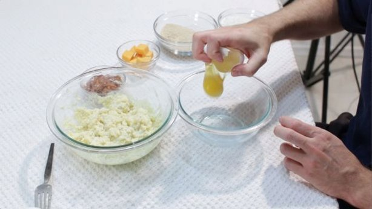

Password
Create Password
Password
Create Password

First grab a small pot and fill it about an inch deep with oil. I use canola oil but you can use vegetable oil too. Turn the heat on medium so it can start to heat up. Then take one egg and add it to your mashed potatoes. Then add your pepper, garlic powder, and salt. If your mashed potatoes are already heavily seasoned then skip the extra seasonings. Mix together with a fork until well combined.

Now we make our egg wash. Add another egg to a small bowl and mix with a fork or whisk. You may add a couple of tsp. of milk to the egg if you like, to help thin it out a little bit.
Now add your bacon bits to the mashed potato mix. I used three large strips of bacon, after they were cooked, I minced them up with a knife, it made about 1/2 cup worth. Add more or less if you like.
Now we take a little handful of potato mixture and put a piece of cubed cheddar cheese in the middle. You can use whatever cheese you like. The cube is about 1/2 inch by 1/2 inch in size. Mold the mixture around the cheese to form a ball adding a little more if necessary.
First we dip the mashed potato ball in the flour, then into the egg wash, then into the bread crumbs, then back into the egg wash then back into the bread crumbs. This will create a nice shell once fried.
Now just keep following those steps and form the rest of the balls. They are ready to be fried!
Now it is time to fry them up! We let our oil get to 350 Degrees F. A little lower is okay, definitely 325 to 350. Add the mashed potato ball in the oil and turn it every 15 seconds or so with tongs until it gets to be nice and dark brown in color. If your oil is too hot it will brown too quickly before the cheese has time to melt on the inside. Once done, place on a paper towel lined plate. They are finished! :)
Guide Courtesy of Instructables.com